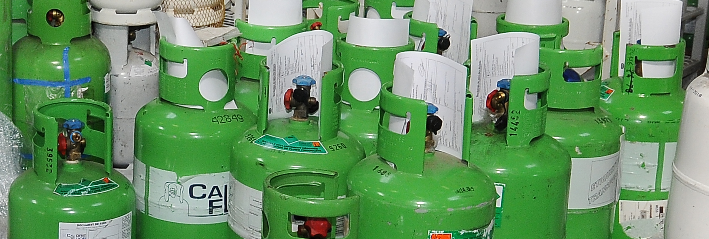
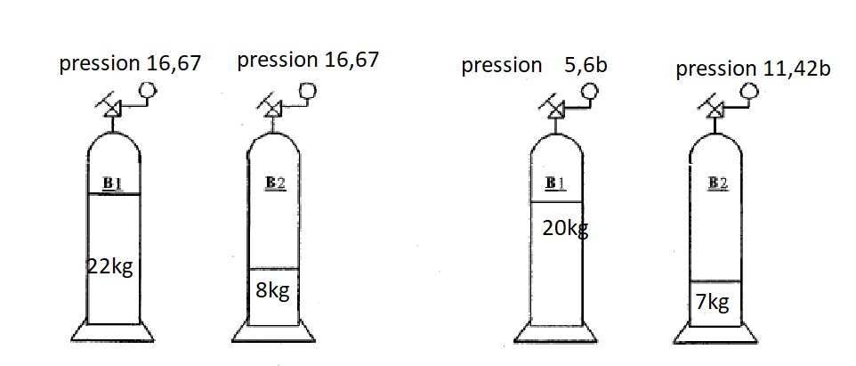

Pas de tâche d'atelier ce jour — cours d'appui en classe entière : comprendre CE QUE contiennent les bouteilles que vous manipulerez à l'azote en S8-F1/S8-F2
Ce que je vais apprendre
Reconnaître une famille de fluide, lire une étiquette de bouteille, connaître les classes de sécurité (A1, A2L, A3…) et le PRP, comprendre pourquoi les fluides changent
Savoir-être
Rigueur d'observation en équipe · honnêteté (dire « je ne sais pas » plutôt qu'inventer) · écoute des autres équipes lors de la mise en commun
Compétence
Appui — aucune compétence remontéeS5.2 augmenté · S0.1 nouveau
Accroche — quel fluide dans la chambre froide de l'arrière-boutique, et pourquoi celui-là ?
Depuis S7, le chantier de l'arrière-boutique avance : la chambre froide a été raccordée (manomètres), déshydratée
(tirage au vide), réglée (consignes), câblée. Il reste à la charger — mais avec quel fluide ? Un
commerçant ne choisit jamais un fluide au hasard : le choix dépend de la machine, de la réglementation, du prix,
et de la sécurité. Avant de charger quoi que ce soit, un professionnel sait TOUJOURS quel fluide il manipule.
Question de départ — D'après vous, à quoi reconnaît-on, sur une bouteille de
fluide frigorigène, le fluide qu'elle contient ? Notez une première idée, même incomplète.
D'après moi, on reconnaît le fluide grâce à _____________________________________.
Ce que vous savez déjà (rappel S4, S5 et S7-T1)
Depuis S4, vous savez qu'une pression correspond à une
température de changement d'état (réglette P/T). En S7-T1, vous avez lu de vraies pressions et températures
sur un groupe de l'atelier. Mais la réglette utilisée jusqu'ici était simulée, volontairement indépendante
de tout fluide réel : elle servait d'outil de lecture, comme un barème. En réalité, chaque fluide a SA
PROPRE relation pression/température : à la même température, un R404A et un R134a n'ont pas la même pression
de saturation. Aujourd'hui, on s'intéresse enfin au fluide lui-même : sa famille, son nom, ses risques.
Ce qui change depuis S7 — En S7-T1, vous lisiez des pressions sans vous
demander quel fluide circulait dans le circuit. Aujourd'hui, on regarde CE qui est écrit sur la bouteille
elle-même : son étiquette, son numéro, sa couleur, sa famille. C'est la première brique du métier de
frigoriste — on ne charge jamais « un gaz », on charge UN fluide précis, identifié, tracé.
Un mot avant de commencer — En 1re année, vous n'avez pas encore
l'attestation d'aptitude qui autorise à manipuler un fluide frigorigène réel : elle se prépare en 2e année.
Ce cours ne vous fait manipuler aucun fluide réel : vous observez des bouteilles et des étiquettes, vous
ne les raccordez jamais. La charge que vous pratiquerez en S8-F1/S8-F2 se fait à l'azote, un gaz neutre,
jamais un fluide frigorigène.
DÉCOUVERTE — l'enquête « carte d'identité des fluides »
Consigne — Par équipe, vous recevez une bouteille réelle (ou une photo
d'étiquette) de fluide frigorigène, présentée par le professeur. Sans jamais la raccorder ni l'ouvrir, observez-la
et remplissez sa carte d'identité ci-dessous, en vous aidant du tableau fourni en annexe (feuille suivante).
À la fin, chaque équipe présente sa carte à voix haute : la classe construit ensemble la frise des familles
(feuille 4).

Bouteilles réelles de fluides frigorigènes, avec leurs étiquettes de traçabilité
(document de suivi agrafé au col). Observez : couleur de la bouteille, étiquette, numéro gravé. D'après :
RAPPORT PRESSION TEMPÉRATURE GWP.docx (02_CAP-IFCA/C4-MettreEnService, F. Henninot).
Fluides couramment rencontrés en froid commercial (banque de noms possibles) — R134a ·
R404A · R410A · R32 · R290 · R717 · R744 · R1234yf. Votre équipe ne travaille que sur LE fluide de sa bouteille ou
de sa photo — pas besoin de connaître tous les autres pour l'instant.
Carte d'identité du fluide — mon équipe
Nom du fluide (numéro R-)
Famille (CFC / HCFC / HFC / HFO / naturel)
Couleur observée sur MA bouteille
Classe de sécurité (A1 / A2L / A2 / A3 / B1 / B2L, d'après l'annexe)
Inflammable ? oui / non
PRP (d'après l'annexe)
Une phrase à retenir sur ce fluide
Attention à la couleur — La couleur d'une bouteille est choisie par SON
fabricant : ce n'est pas une règle universelle, deux fabricants peuvent peindre le même fluide dans deux
couleurs différentes. Ce qui fait foi, c'est l'étiquette (nom du fluide, pictogrammes de danger, numéro de
lot). Notez la couleur que vous observez, mais ne la considérez jamais comme une preuve à elle seule.
Question 1 — D'après vous, pourquoi un frigoriste ne doit-il JAMAIS se fier
uniquement à la couleur d'une bouteille pour savoir ce qu'elle contient ? Notez votre idée.
ANNEXE 1 — tableau des classes de sécurité (NF EN 378 / ASHRAE 34)
Deux critères : la toxicité (A faible, B plus élevée) et l'inflammabilité
(1 non inflammable, 2L faiblement inflammable, 2 inflammable, 3 très inflammable). Utilisez ce tableau pour
compléter votre carte d'identité.
ANNEXE 2 — extrait du tableau fluide / famille / PRP
Le PRP (Potentiel de Réchauffement Planétaire) mesure l'impact d'un fluide sur
l'effet de serre, comparé au CO₂ (PRP = 1). Plus le PRP est élevé, plus le fluide réchauffe le climat s'il fuit
dans l'atmosphère.
D'après le tableau « Fluides-GWP-Glide-Class » et la fiche
classification NF EN 378 / ASHRAE 34 de la bibliothèque de l'établissement (valeurs PRP AR4, 100 ans).
⚠ Le piège à ne jamais commettre — Le R290 (propane) est un
hydrocarbure : il est classé A3 (très inflammable), PAS A2L. Ne le confondez jamais avec le
R32 ou le R1234yf, qui sont des HFC/HFO à faible PRP classés A2L (faiblement inflammables seulement). Règle
simple : un nom de fluide qui « sonne comme » un hydrocarbure (propane, butane, isobutane, propylène, éthane) est
toujours A3.
Une ligne par équipe appelée : recopiez ici les cartes d'identité de TOUTES les
équipes, au fur et à mesure de la présentation orale.
Équipe
Fluide
Famille
Couleur observée
Classe
PRP
Inflammable ?
1
2
3
4
5
6
ANNEXE 4 — la frise des familles (à compléter avec le professeur)
Les familles de fluides se sont succédé dans le temps : chaque famille a été
interdite progressivement à cause d'un risque découvert plus tard. Complétez les pointillés pendant que le
professeur formalise.
D'après : le principe des fluides de transition
(Cours_Fluides_Transition_Inerweb.pdf, F. Henninot) et les risques environnementaux CFC/HCFC/HFC (INRS ED 969,
« Les fluides frigorigènes »).
À l'aide des annexes 1 et 2 (feuille 3), complétez les deux colonnes vides pour
chaque fluide.
Fluide
Classe de sécurité
Usage courant
R744 (CO₂)
R717 (NH₃)
R290
R32
R134a
R404A
Question 2 — Parmi les fluides du tableau, lequel a le PRP le plus élevé ?
Lequel a le PRP le plus faible ? Que remarquez-vous entre l'ancienneté d'un fluide et son PRP ?
APPLICATION 2 — pourquoi ce fluide, et pas un autre ?
Revenons à l'accroche : la chambre froide de l'arrière-boutique doit être chargée.
Le commerçant veut un fluide peu cher, disponible, avec un faible impact climatique. Le professeur vous
donne le contexte réel (petite charge, local ventilé ou non). À partir de vos annexes, proposez UNE famille de
fluide adaptée et justifiez en une phrase.
Je proposerais un fluide de la famille _____________ car _____________________________________.
Cochez VRAI ou FAUX pour chaque affirmation. Pour chaque FAUX, corrigez en une
phrase.
1. Le R290 (propane) est classé A2L, comme le R32.VRAI / FAUX
2. Les CFC sont interdits en France aujourd'hui.VRAI / FAUX
3. Le CO₂ (R744) a un PRP très élevé.VRAI / FAUX
4. Un fluide classé A1 est non inflammable.VRAI / FAUX
5. On peut recharger n'importe quelle installation avec n'importe quel fluide, si la pression convient.VRAI / FAUX
6. L'ammoniac (R717) est un fluide à la fois inflammable ET toxique.VRAI / FAUX
7. En 1re année CAP, on peut manipuler un fluide réel si le professeur supervise.VRAI / FAUX
APPLICATION 4 — identifier un fluide par pression et température (papier, sans manipulation)
Ces bouteilles ont été stockées toute une nuit dans une pièce à température
constante (25 °C), puis un manomètre a été posé sur chacune.

D'après : RAPPORT PRESSION TEMPÉRATURE GWP.docx (02_CAP-IFCA/C4-MettreEnService,
F. Henninot).
Question 3 — Sur la première paire, les bouteilles B1 (22 kg) et B2 (8 kg)
affichent exactement la même pression. Pourquoi, alors qu'elles ne contiennent pas la même quantité de
fluide ?
Question 4 — Si une bouteille est presque vide (il ne reste presque plus de
liquide), le rapport pression/température fonctionne-t-il encore de la même façon ? OUI / NON — justifiez.
Question 5 — La pression indiquée sur un manomètre de frigoriste est-elle
lue en pression relative ou en pression absolue ? Entourez : Relative / Absolue
Complétez cette fiche avec la correction donnée en classe : c'est votre trace
écrite, à garder pour S8-F1, S8-F2 et pour toute la suite de votre formation.
Famille
Statut aujourd'hui
Ce que je retiens
CFC
Interdits
HCFC
Interdits
HFC
En réduction progressive
HFO / transition
En développement
Naturels (CO₂, NH₃, hydrocarbures)
L'avenir
La phrase à retenir
« On ne charge jamais
“un gaz” : on charge UN fluide précis, identifié par son étiquette, jamais par sa seule couleur. »
Le piège à ne jamais oublier — R290 (propane) =
A3, très inflammable. Pas A2L.
Pourquoi on ne manipule pas ces fluides en 1re année — Manipuler un fluide
frigorigène réel (raccorder une bouteille, charger, récupérer) exige une attestation d'aptitude valide,
qui atteste que le technicien connaît les risques et les gestes sûrs. Cette attestation se prépare en 2e
année. En attendant, vous apprenez le geste de charge à l'azote (S8-F1, S8-F2) : un gaz neutre, sans
danger de fuite toxique ni inflammable, qui permet de répéter la procédure en toute sécurité. La vraie charge,
avec le vrai fluide et l'attestation, c'est pour l'an prochain.
Auto-positionnement
Échelle FrigorX : 0 Non évalué · 1 Non acquis · 2 En cours
d'acquisition · 3 Acquis · 4 Parfaitement maîtrisé. Statut Appui : ce cours ne remonte AUCUNE compétence sur
École Directe — c'est une auto-évaluation courte, pour vous situer.
Ce que je sais faire
0 Non évalué
1 Non acquis
2 En cours d'acquisition
3 Acquis
4 Parfaitement maîtrisé
Reconnaître une famille de fluide, lire une étiquette, situer un fluide sur les classes A1/A2L/A3…
Appui — S5.2 / S0.1
Compétence non observée ce jour.
Je confonds les familles, même avec de l'aide.
Je reconnais une famille avec de l'aide, je confonds encore parfois les classes de sécurité.
Je reconnais seul(e) une famille, je situe un fluide sur sa classe et je n'oublie pas le piège R290.
Comme « Acquis », et j'explique à un camarade pourquoi le R290 n'est pas A2L.
Savoir-être — rigueur d'observation, honnêteté (ne pas inventer), écoute des autres équipes
Non observé.
Je réponds au hasard, je n'écoute pas les autres équipes.
Je participe mais j'ai besoin d'un rappel pour être rigoureux(se).
J'observe avant de conclure et j'écoute la mise en commun.
Comme « Acquis », et j'aide un camarade à corriger une confusion de classe.
Reconnaître une famille, une classe de sécurité, éviter le piège R290 :
01234
Ce cours n'est pas noté sur École Directe : il
prépare le geste de charge simulée (S8-F1, S8-F2) et pose le premier repère de sécurité fluides que vous
retrouverez toute votre carrière.
D'après : cadrage pédagogique
S8-T1 (méthode « enquête carte d'identité des fluides », F. Henninot, 19/07/2026) ; Cours_Fluides_Transition_
Inerweb.pdf et Feuille_Eleve_Fluides_Transition_Inerweb.pdf (05_Ressources-Partagees/Froid-Climatisation,
familles/classes A1→B2L/F-Gaz/PRP) ; Fluides-GWP-Glide-Class-V5.pdf (tableau fluide/GWP/glide/classe,
05_Ressources-Partagees/Froid-Climatisation) ; RAPPORT PRESSION TEMPÉRATURE GWP.docx (02_CAP-IFCA/
C4-MettreEnService — exercice d'identification par pression/température, photo de bouteilles réelles) ; Les
fluides frigorigènes, INRS ED 969, 2005 (familles, risques, réglementation historique CFC/HCFC/HFC) ; fiche
Whart Identification_fluides_TeqCO2 (classification NF EN 378/ASHRAE 34, piège R290 — 25-26-bureau/vrac fiep 3/
Fiches_Whart) ; classification de sécurité et piège R290=A3 vérifiés au skill de référence `fluides-nfen378`
(NF EN 378 / ASHRAE 34). Aucune valeur de classe ou de PRP n'est affirmée hors de ces tableaux sourcés. La
couleur de bouteille observée en feuille 2 est celle du fabricant de la bouteille présentée en classe, pas une
règle universelle.